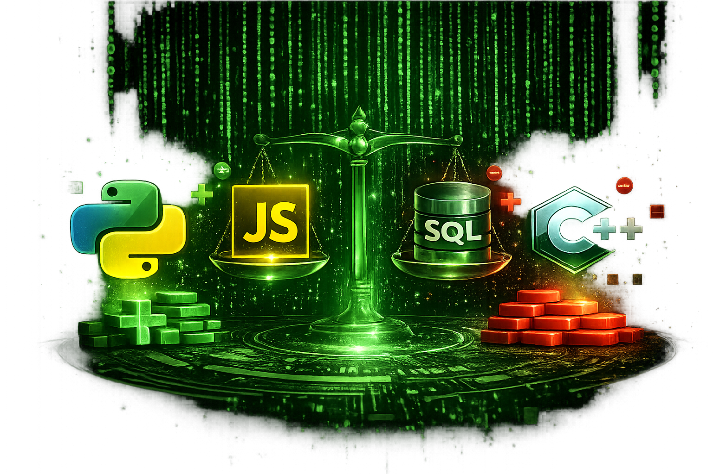
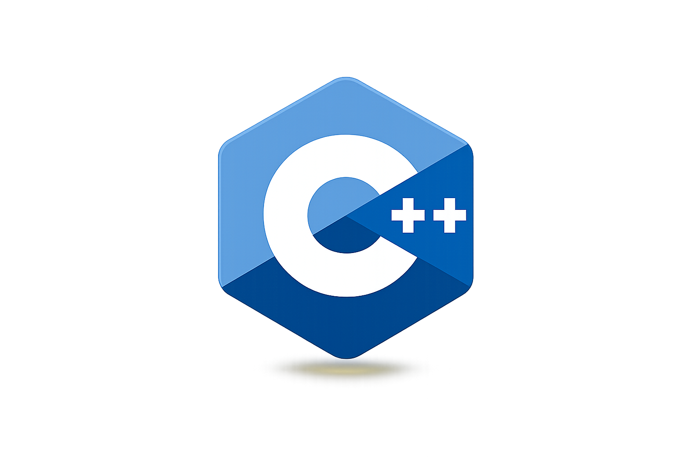

Computer Programming Languages
Pros & Cons of Programming Languages

Python
Pros
- Easy to learn
- Large community
- Great for AI and automation
Cons
- Slower than compiled languages.
- Not ideal for mobile development.
- High memory consumption.
JavaScript
Pros
- Runs in all browsers
- Great for web development
- Large ecosystem of libraries
Cons
- Dynamic typing can cause bugs
- Browser compatibility issues
- Difficult to maintain in large projects
SQL
Pros
- Easy to query data
- Industry standard
- Efficient with large datasets
Cons
- Limited to database tasks
- SQL syntax varies slightly by database
- Not a general-purpose language
C++

Pros
- Very fast
- Direct memory control
- Excellent for performance-critical software
Cons
- Difficult to learn
- Manual memory management
- More complex syntax